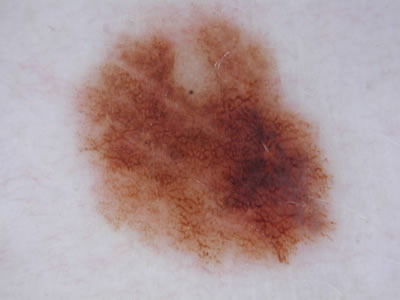
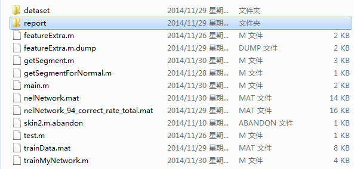
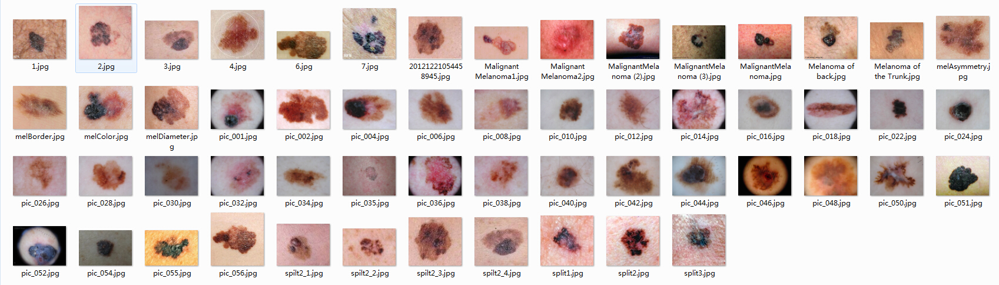
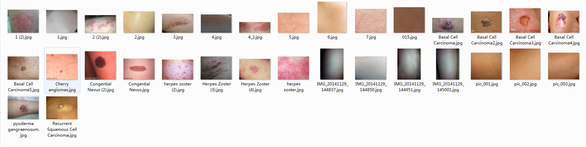

Melanoma is a type of skin cancer which forms from melanocytes (pigment-containing cells in the skin) and it is one kind of the skin cancer.
If melanoma is found early, while it is still small and thin, and if it is completely removed, then the chance of cure is high.However, it is much more dangerous if it is not found in the early stages. It causes the majority (75%) of deaths related to skin cancer.
So we try to find a way of image recognition to identify this disease and try to help.
In the following passage we will use Melanoma or cancer refers to Melanoma.
Our goal is to develop a tool that can automatically recognize whether an image is of Melanoma , and its correct rate should be more than 80%.
Our program is developed using Matlab 2014a, with 64bit windows. Since we have used the Neural Network Toolbox to set up and train our neural network, you should run this code with a Matlab version(maybe 2009 or higher) that has the Neural Network Toolbox(nntool).
Unzip the source file, do not change the directory structure, and you should see this:

Then open your Matlab and change the directory to this so that you can directly run the main.m .
We divide the total dataset into two classes : the Melanoma class and the none Melanoma class. 
Images of Melanoma class
Images of none Melanoma class